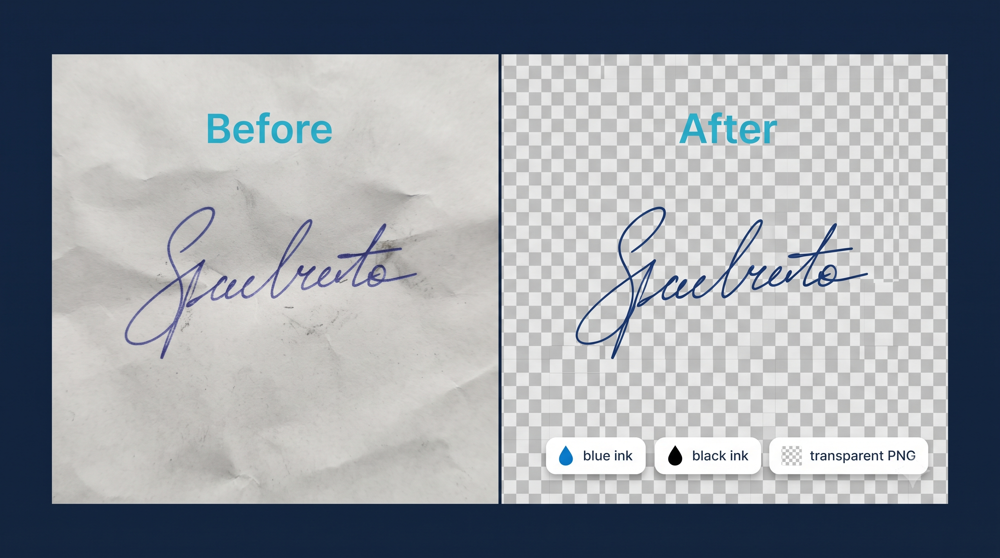

🖋 Signature Background Remover
Clean handwritten signatures, remove paper shadows, and create pure transparent PNGs — 100% private.
Select or Drop Signature Photo
Supports JPG, PNG, WEBP — Instant Local Processing
Complete Guide: Clean & Extract Signatures with Transparent PNG Background
Signing electronic invoices, official PDF contracts, government forms, and bank mandate applications requires a clean, digital signature devoid of phone camera shadows and grayish paper backgrounds. The doceasy Signature Background Remover utilizes an adaptive integral threshold algorithm that dynamically evaluates localized illumination gradients across your image.

📷 [Place Demo Here: assets/images/signature-remover-demo.jpg]How to Remove Paper Background from Signatures:
- Step 1 - Upload Snapshot: Take a clear smartphone photo of your handwritten signature on white paper.
- Step 2 - Adjust Shadow Sensitivity: Use the Sensitivity slider to calibrate until paper creases and shadows vanish.
- Step 3 - Smooth Edge Curves: Fine-tune the Soft Edge slider to retain natural pen pressure variation.
- Step 4 - Select Ink Mode & Download: Retain original ink or normalize to Jet Black before exporting a transparent PNG.
FAQ
Q: How do I remove shadows caused by taking a photo indoors?
Increase the Shadow Cleanup slider to around 30–35.
Q: Can this turn a blue ballpoint signature into solid black?
Yes. Set "Ink Color Mode" to "Make Solid Jet Black".
Q: Is my signature saved anywhere?
Never. All calculations run strictly client-side.